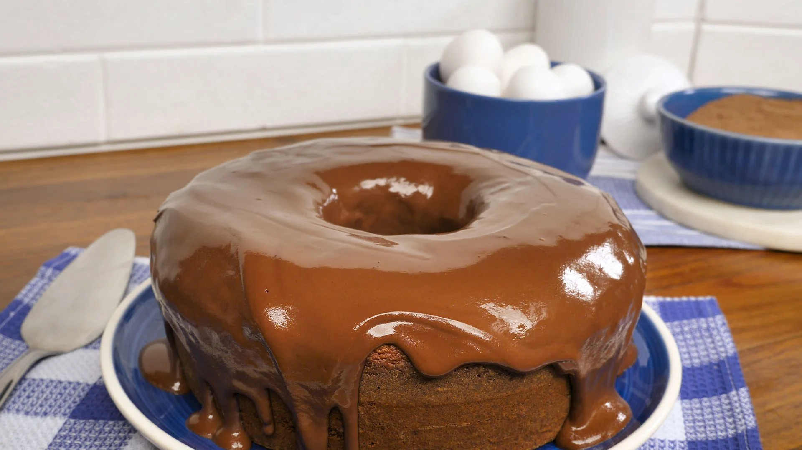

Ingredientes:
- 4 ovos;
- 2 xícaras de farinha;
- 1/2 xícaras com açúcar;
- 1 chávena de cacau ou chocolate em pó;
- 1 chávena de leite;
- 1 colher de sobremesa de fermento em pó;
- Manteiga q.b. (para untar a forma);
- Farinha q.b. (para polvilhar a forma).
Cobertura:
- 1 tablete de chocolate de cozinha;
- 100 ml de natas;
- 1 colher de sopa de açúcar;
- 1 colher de sopa de manteiga;
Modo de preparo:
- Pré-aqueça o forno e coloque-o a 180º C.
- Unte uma forma com manteiga, polvilhe a mesma com farinha e reserve.
- Bata os ovos, juntamente com o açúcar, até criar um creme sem grumos e brilhante.
- Adicione os ingredientes restantes, um a um, mexendo sempre a cada adição, até incorporar.
- Coloque o preparado na forma untada previamente.
- Leve a forma ao forno por 45 minutos (ou até o palito sair seco).
Preparar cobertura:
- Num tacho antiaderente, derreta a barra de chocolate com a colher de manteiga, em lume brando. Sem deixar ferver, nem pegar;
- Acrescente as natas, aos poucos;
- Mexa sempre com uma vara de arames de modo a incorporá-las bem;
- Acrescente o açúcar e mexa um pouco mais até obter um creme de chocolate luminoso;
- Espalhe o preparado sobre o bolo já desenformado.